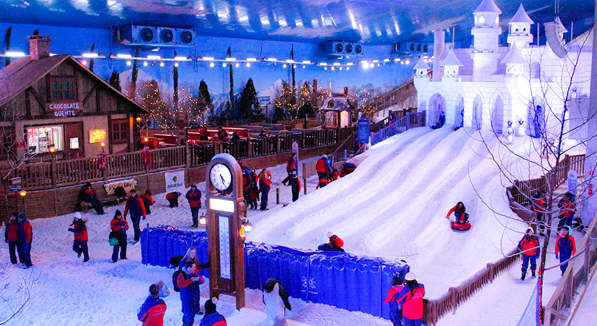
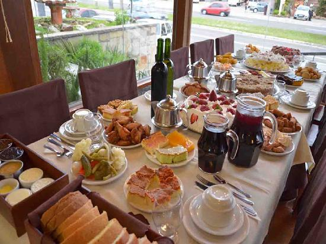

Informações
Gramado é um município do estado do Rio Grande do Sul, no Brasil. Localiza-se na Serra Gaúcha, mais precisamente na Região das Hortênsias, a uma latitude 29º 22' 44" sul e a uma longitude 50º 52' 26" oeste, estando a uma altitude de 830 metros. Sua população estimada em 2018 é de 35.875 habitantes.[3] Possui uma área de 237,019 quilômetros quadrados. Seu principal acesso se dá através da RS-115, embora também seja atendida pelas rodovias RS-235 e RS-373.

Parque Congelado Snowland.

Café Colonial.
| Onde Ir | Localidade | Atração | Qtd. Pessoas | Custo Médio | ||||||||||
|---|---|---|---|---|---|---|---|---|---|---|---|---|---|---|
| Gramado | Gramado | Snowland | 2 | R$ 220,00 | ||||||||||
| Gramado | Canela | Café Colonial | 2 | R$ 140,00 | ||||||||||